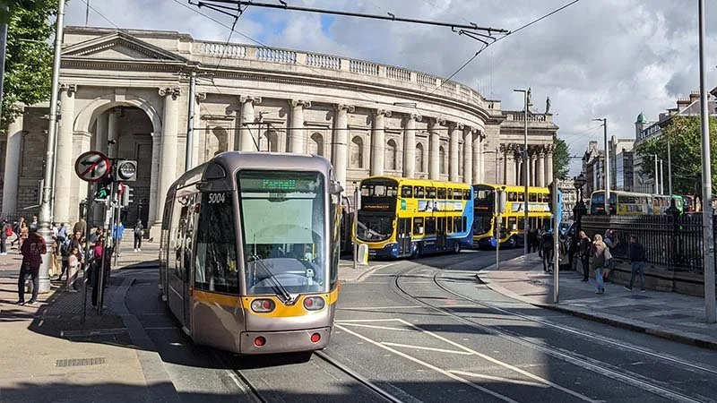
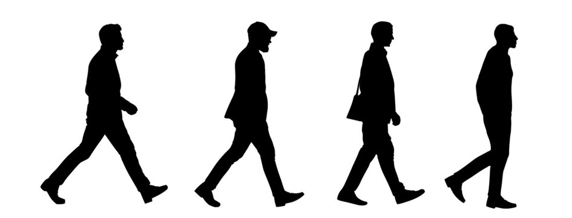
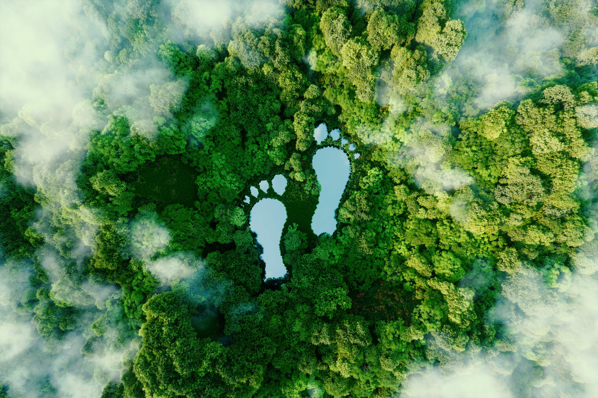

The Enviromental impact of Travel
The way we tarvel has a huge impact on the planet. From carbon emmissions to air pollution transportation contributes to many enviromental challenges. undersatnding these impacts is the first step towards making greener travel choices

Transportation
Transport plays a major part in our day to day lives. However it also has a huge impact on the enviroment. Planes,Cars and Buses produce green house gas emissons that contrubute to climate change and air pollution choosing sustainable travel and tarnaspot like public transport can help reduce our enviromental impact

Issues
In some areas of ireland especially the countryside there is very limited public transport so this leads to a lot of people owning cars and using them very often. Eco friendly travel options such as Electric vehicles come at a high cost.

Sustainable travel options
Walking and Cycling are enviromentally Friendly ways to travel. They produce no direct emissions and help you stay healthy. Using buses and trains instead of Drivimg to work can reduce the number of cars on the road and also lower carbon emissions and if you can't Carpooling is also an option if someone you work with or go to school with drives go with them and if you can afford it Electric Vehicles are also an option